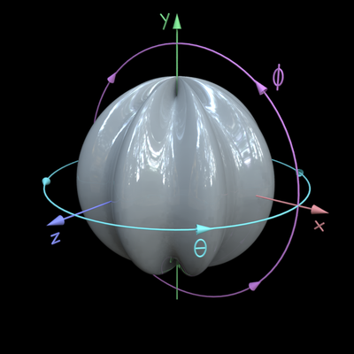
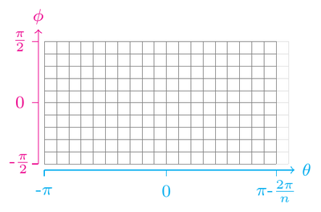

Sphere¶
 {kind=link}
Coordinate system¶
Perturbations for the sphere are defined in a spherical coordinate system, pictured above. The picture on the left shows the coordinate system in a 3D figure, the second picture from the left has the spherical coordinates wrapped open. The two pictures on the right show how the triangular faces approximating the surface are formed.
Note that in this coordinate system y-axis points “up”.
When adding a sinusoidal modulation to the sphere, orientation of 0 means “vertical”, that is, modulation in the azimuth (theta) angle. Orientation of 90 is “horizontal”, or in the elevation angle.
Mapping perturbations and textures to a sphere¶
When adding a vertical sinusoidal perturbation to a sphere, it will become very high frequency towards the poles (spatially, in terms of the angle the frequency stays the same). The same happens when using noise, or when using an image or a matrix as a height map. The same happens with texture/UV coordinates: the mapped texture will look distorted on the surface of the sphere.
There is currently no flat-mapping of these modulations or textures to a sphere.
An expection are Gaussian bumps (using objMakeBump) and
perturbation determined by a user-defined function (using
objMakeCustom). Here, the bumps are symmetric with the desired
size in radians, regradless of the location of the bump.
Default mesh size¶
The default size (number of vertices) for the sphere shape is
64-by-128 (elevation, azimuth). For models with very high-frequency
perturbations or otherwise fine detail, you might want to increase the
mesh size. To do this, use the option npoints:
objMakeSine('sphere',[40 .1 0 0],'npoints',[200 400]);
Default model size¶
Radius = 1.
Redundant vertices¶
The lines of longitude get closer together before meeting at the pole of the sphere, and so the density of vertices increases towards the poles also. In many cases, the sampling is clearly redundant and a smaller number of vertices would suffice. In these cases, the mesh could be down-sampled to reduce file size. ShapeToolbox does not throw away any vertex or face data, however. This is for a couple of reasons. First, these models are mainly intended for research on visual perception, not for efficient graphics applications. Second, in some cases you might need a high resolution near the poles.
Third, the models produced by ShapeToolbox functions can be given as
input to other functions to add perturbations, and two models can also
be blended (using objBlend). In these cases, the coordinates
systems and the sampling points have to match. Not fiddling with the
mesh enables one to do both (see Combining modulation types and
Blending (morphing between) two models).
Some faces have a zero area near the poles and some rendering engines, at least Radiance, will complain about these. They will not affect the rendering quality. The current version of ShapeToolbox does not remove these faces.